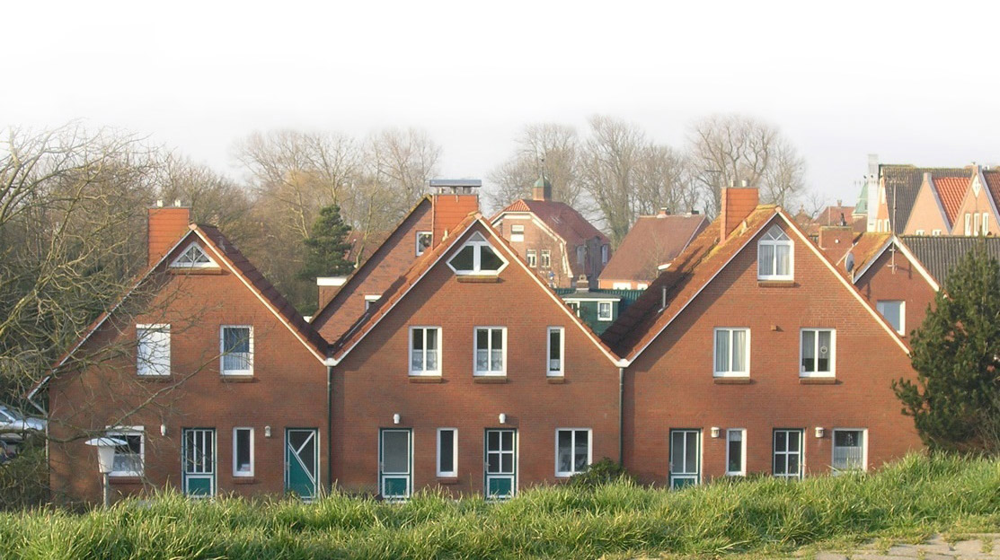

Ihre erste Adresse für Urlaub in Neuharlingersiel.

Dicht am historischen Fischerhafen in Sackgassenlage finden Sie unsere Ferienwohnungen im mittleren der drei abgebildeten Häuser.
Badestrand, Kureinrichtungen, Meerwasserhallenbad befinden sich in unmittelbarer Nähe Ebenso sind Restaurants und Einkaufsmöglichkeiten nur wenige Gehminuten entfernt.
Wir bieten Ihnen Urlaubsqualität erster Klasse - immer- auch während der Nebensaison.
Beide Wohnungen bieten jeweils zwei Schlafzimmer, gut ausgestattete Einbauküchen mit Mikrowelle und Geschirrspüler, sowieo Duschbad und WC.
Zudem sind beide Wohnungen mit SAT-TV, Telefon und Internetzugang, CD/Radio und jeweils Kinderstuhl und -Bett ausgestattet.
Direkt am Haus gibt es zudem einen Fahrzeugstellplatz je Wohnung, ebenso wie einen Waschbereich mit münzbetriebener Waschmaschine und Wäschetrockner.
Wohnung "Baltrum"
Wohlfühlen leicht gemacht, in der Erdgeschosswohung Baltrum!
Die ebenerdige Wohnung "Baltrum" ist der perfekte Ort für einen Familienurlaub. Der gemütlich eingerichtete, großzügige Wohn-Essbereich läd, nicht zuletzt durch den Kaminofen zum verweilen ein. Selbst bei ostfriesischem Schmuddelwetter.
Und auch wenn sich das Wetter von der besseren Seite zeigt, bietet die Terasse einen Platz zum Entspannen in der Sonne.
Wohnung "Langeoog"
Riskieren Sie einen Blick auf den Deich, aus unserer Wohnung Langeoog!
Die Wohnung "Langeoog" bietet alles, was das Urlauberherz begehrt! Gelegen im 1. Obergeschoss, bietet diese Wohnung, erreichbar über einen seperaten Eingang im Erdgeschoss, eine sonnige Atmosphäre mit moderner Einrichtung. Hervorragend genießen lässt sich die Sonne außerdem auf dem großen Balkon in Südrichtung.
Wo liegt eigentlich das Inselhaus?
Direkt hinter dem Deich befindet sich das Inselhaus in unmittelbarer Nähe zum Hafen.
Somit sind sämtliche Einrichtungen im Ortskern, sowie auch der Badestrand fußläufig erreichbar.
Kontakt und Buchung
Lust auf Urlaub im Inselhaus? - Rufen Sie uns an!
Anfragen für Buchungen nimmt Frau Angelika Deyen unter Tel: 0591 - 3726 gerne entgegen.
Selbstverständlich stehen wir auch stets für weitere Fragen rund um die Wohnungen zur Verfügung.